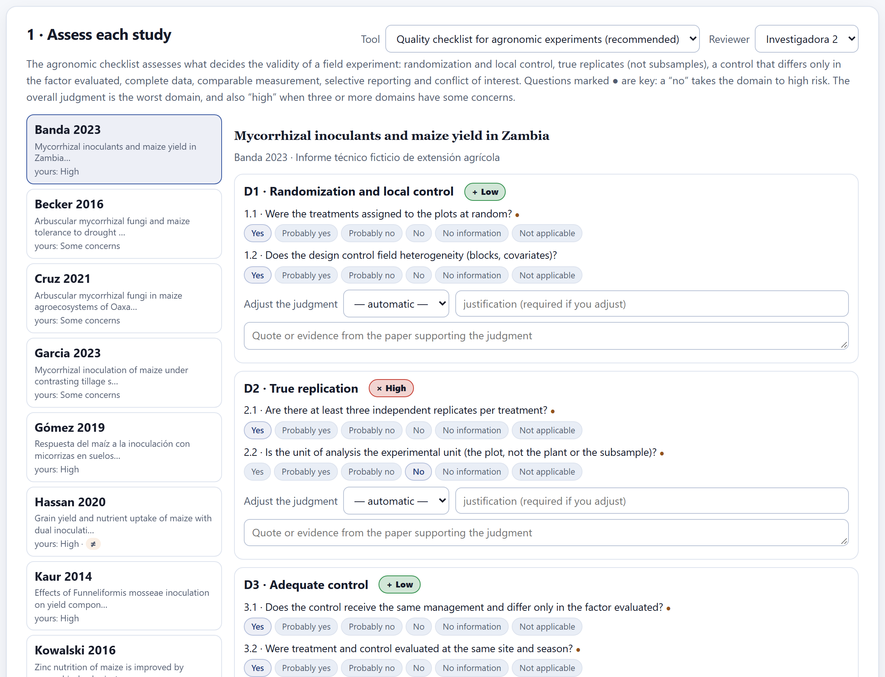
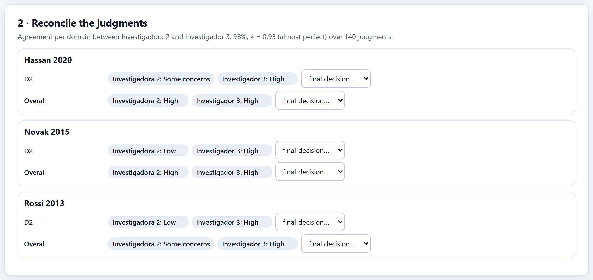
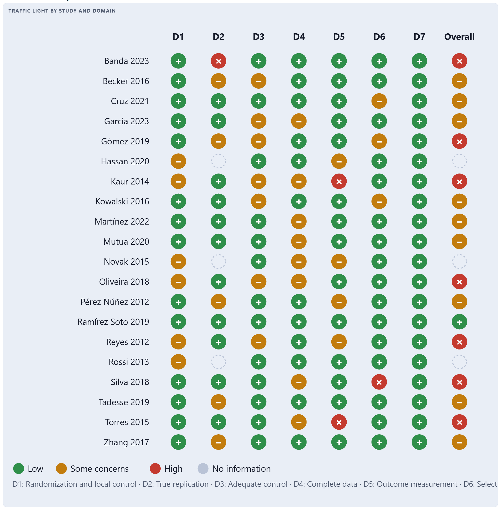
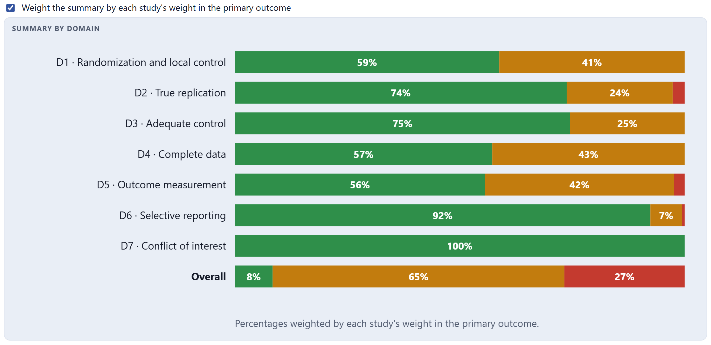
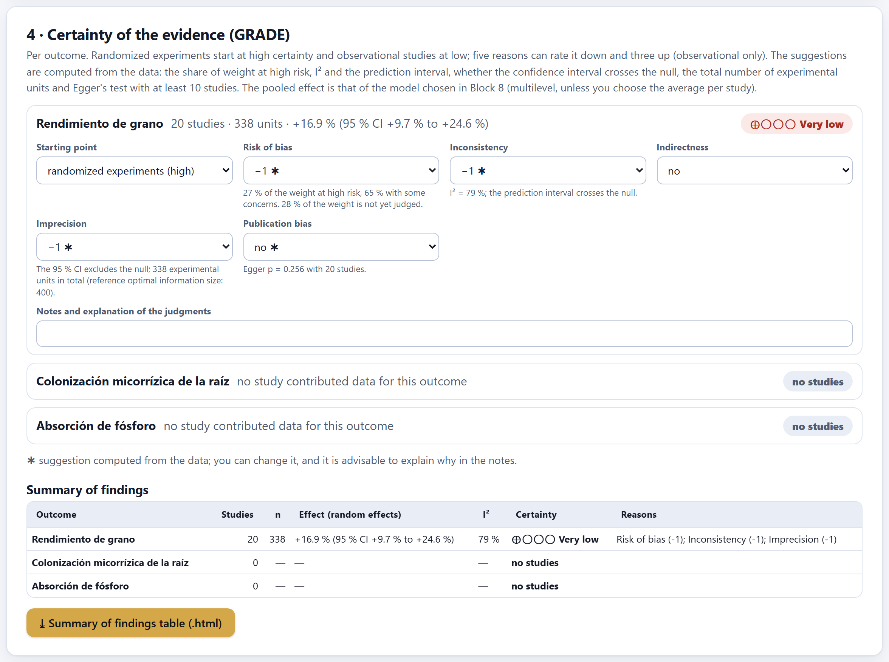

Each included study is assessed by domains with signaling questions; the app proposes the judgment for each domain and you confirm it or adjust it with a justification. The judgments of two reviewers are reconciled, feed the traffic-light and summary plots, and enter—together with heterogeneity, precision and publication bias—into the certainty of the evidence for each outcome with GRADE, which ends in the summary of findings table.
The tool is chosen in the protocol (Section 2.6) and can be changed in the Tool menu of the first card. Use a single tool for the whole review: mixing tools makes the judgments impossible to compare.
| Tool | For which studies |
|---|---|
| Quality checklist for agronomic experiments (recommended) | Field, greenhouse or laboratory experiments with assigned treatments. Seven domains designed for agricultural designs. |
| RoB 2 (Sterne et al. 2019) | Randomized trials in the clinical sense, with assigned participants. |
| ROBINS-I (Sterne et al. 2016) | Non-randomized studies of interventions. |
| Newcastle–Ottawa | Observational cohort or case-control studies. |
| Checklist for qualitative studies | Qualitative evidence. |
| Domain of the agronomic checklist | What it asks |
|---|---|
| D1 Randomization and local control | Were the treatments assigned at random? Does the design control field heterogeneity (blocks, covariates)? |
| D2 True replication | Are there at least three independent replicates? Is the unit of analysis the plot, not the plant or the subsample? |
| D3 Adequate control | Does the control receive the same management and differ only in the factor evaluated, at the same site and in the same season? |
| D4 Complete data | Are all plots reported, or are losses explained? Are losses similar across treatments? |
| D5 Outcome measurement | Was it measured the same way in all treatments, with a comparable method? |
| D6 Selective reporting | Are all the outcomes, sites and seasons measured reported? Does the analysis seem to have been set in advance? |
| D7 Conflict of interest | Was the study funded or carried out by the manufacturer of the product evaluated? |

On the left, the studies with the active reviewer’s overall judgment (yours: High, Some concerns…). On the right, each domain with its signaling questions, answered with Yes, Probably yes, Probably no, No, No information or Not applicable. From the answers, the app proposes the judgment for the domain—Low, Some concerns or High—and shows it in the colored label.
The questions marked with ● are key: a “No” to one of them takes the domain to high risk. “Probably no” and “No information,” or a “No” to a question that is not key, leave it with some concerns. In the conflict-of-interest question—was it funded by whoever sells the input?—the worrying answer is “Yes.” The overall judgment is the worst of the domains, and also “high” when three or more domains have some concerns: many small problems add up to a big one.
The proposed judgment is not binding: Adjust the judgment changes it, but asks for a justification. And each domain has a field for the quote or evidence from the paper that supports the judgment—“Materials and methods: ‘five plants per plot were sampled and analyzed as replicates’”—: with it, another reviewer can check it without rereading the paper.

With two reviewers, the card gives the agreement per domain—percentage and kappa over all judgments—and lists only the domains where they differ, with each reviewer’s judgment and a final decision… menu. The final decision is the one used by the plots and by GRADE.
In the example, the reviewers agree on 98% of 140 judgments (κ = 0.95, almost perfect), but Hassan 2020, Novak 2015 and Rossi 2013 are still not reconciled: that is why Block 10 marks this block as in progress (85%) and the report comes out as a draft. They appear as empty circles in the traffic-light plot.


The traffic-light plot shows each study in each domain; the summary, what fraction of the evidence is at each level. With the Weight the summary by each study's weight in the primary outcome checkbox, each study counts according to its weight (the inverse of the variance of its effects) instead of counting as one; that way you can see whether the high risk lies in the studies that drive the result or in the marginal ones. Both plots are exported with the ⤓ button in their corner, and ⤓ Judgments per study (.csv) downloads the complete table.

GRADE (Guyatt et al. 2008) rates certainty per outcome, not per study. Randomized experiments start at high certainty and observational studies at low; five reasons can rate it down one or two levels and three can rate it up, in observational studies only. The result is high (⊕⊕⊕⊕), moderate (⊕⊕⊕◯), low (⊕⊕◯◯) or very low (⊕◯◯◯). The app suggests each judgment from the data, marks it with ✱ and says why:
| Reason | How the app suggests it |
|---|---|
| Risk of bias | −2 if more than 75% of the weight is at high risk; −1 if half or more is, or if high risk and some concerns add up to more than 80%. It is computed on the studies already judged, and it warns how much weight remains to be judged. |
| Inconsistency | −1 if I² exceeds 75%, or if it exceeds 50% and the prediction interval crosses the null value while the confidence interval does not. |
| Indirectness | Not suggested: it depends on whether the population, intervention or outcome of the studies are those of your question. You decide. |
| Imprecision | −1 if the 95% CI includes the null value, or if the total number of experimental units is smaller than the reference optimal information size (400); −2 if both happen. |
| Publication bias | −1 if Egger’s test gives p < 0.10 with at least 10 studies; with fewer, it is not assessed and this is noted. |
| Large effect, dose–response, confounding that reduces the effect | Observational studies only; you decide. |
The effect shown with each outcome is the one from the model chosen in Block 8—multilevel, unless you choose the average per study—, the same one the manuscript will cite. A protocol outcome without data appears as no studies: that is reported too.
Each ✱ is a computed starting point; the judgment is yours. If you change it, explain why in Notes and explanation of the judgments: the note appears in the summary of findings table, and referees read it.
Below is the summary of findings table: one row per outcome, with the number of studies, the experimental units, the effect with its 95% CI, I², the certainty and the reasons. It is the table that the guidelines recommend placing in the body of the article; ⤓ Summary of findings table (.html) downloads it ready to print or copy, and in Block 9 it enters the manuscript with {{table:sof}}.
“There are no included studies yet (Block 5).”; “Declare outcomes in the protocol or extract effects in Block 6.”; the warning about a missing justification when adjusting a judgment; and, in GRADE, “With fewer than 10 studies funnel asymmetry cannot be assessed; it is not rated down and is noted.”